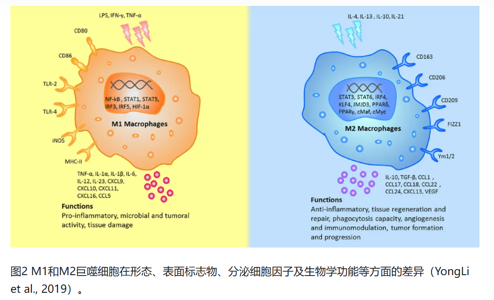
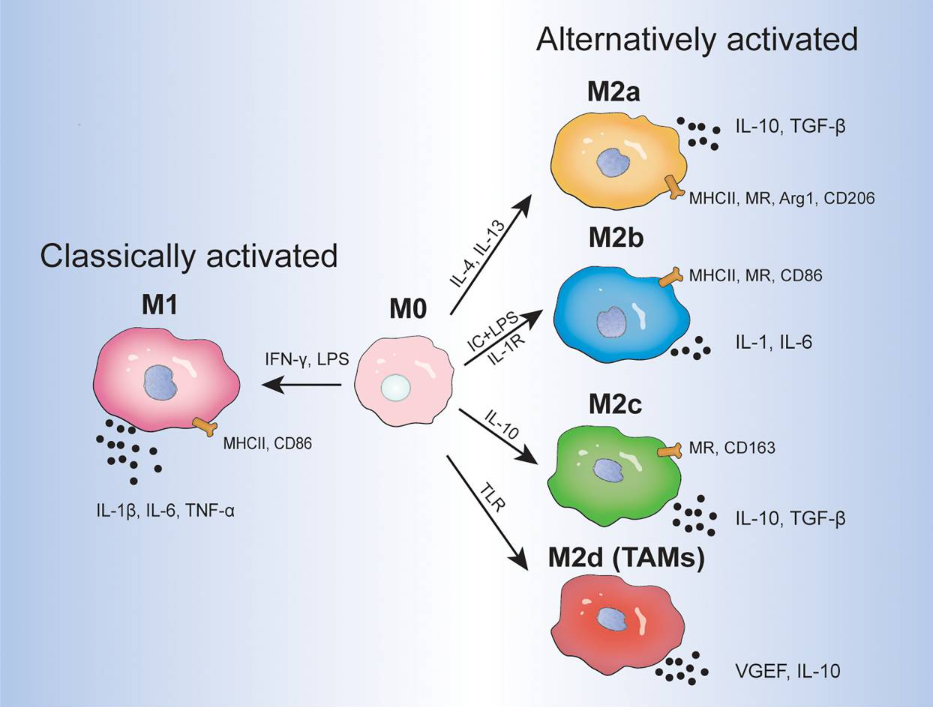
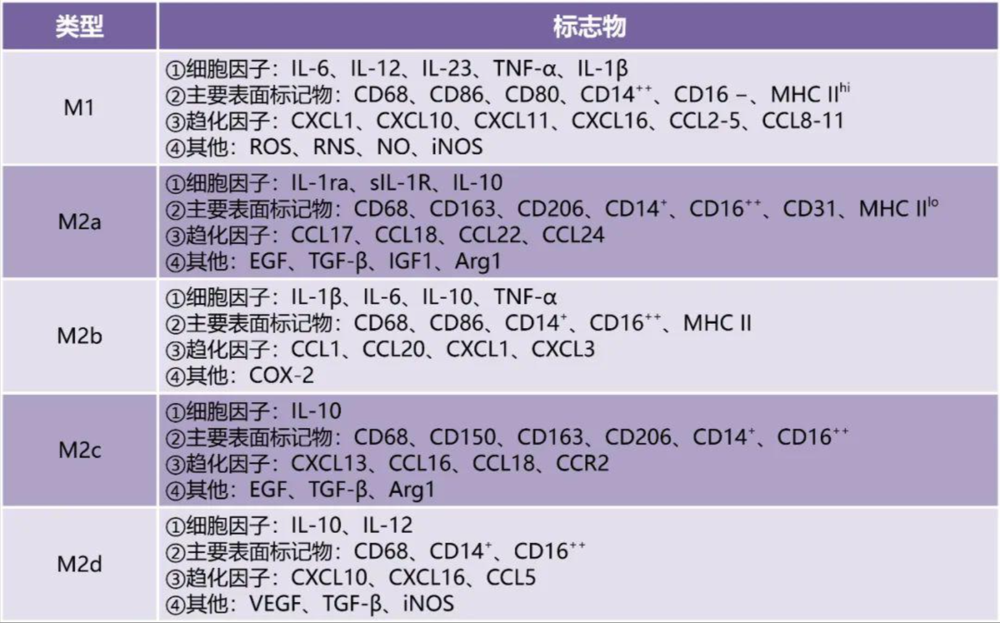

从上一篇文章的讨论我们已经知道：
巨噬细胞从M1到M2的转化失败是DW伤口迟迟不能愈合的关键因素之一
IL4，IL-10，Glucocorticoids，Prostaglandins (PGs) 和 modulators of glucose and lipid metabolism诱导M2转化
pro-inflammatory cytokines，interferons (IFNs)，PAMPs 和 DAMPs诱导M1转化
抗菌作用，ROS清除能力或减少伤口炎症可能会诱导M2转化
相关检测手段：免疫荧光染色法可以检测M2巨噬细胞的特征性标志物CD206；酶联免疫吸附试验（ELISA）可以检测相关细胞因子的分泌；Masson三色染色可以检测胶原蛋白形成和沉积；平板计数法可以测量抗菌能力。
这篇文章的目的是探寻巨噬细胞转化失败的原因，首先看看目前有哪些诱导巨噬细胞M2转化的方案极其效果，随后利用巨噬细胞调节通路进行解释，最后提出几种比较有希望的诱导方案
classical pathway : interferon-γ-dependent activation of macrophages by T helper 1 (TH1)-type responses
come from : Alternative activation of macrophages | Nature Reviews Immunology
alternative pathway : macrophage activation by the TH2-type cytokines interleukin-4 (IL-4) and IL-13
come from : Alternative activation of macrophages | Nature Reviews Immunology
此后的研究表明，巨噬细胞的活化取决于特异性活化的 T 辅助细胞 1（TH1）型淋巴细胞和自然杀伤细胞（NK）的产物，特别是interferon-γ（IFN-γ），以及由抗原递呈细胞（APC）产生的 interleukin-12（IL-12）和 IL-18 等细胞因子网络。
TH1免疫应答是指TH1细胞针对诸如细菌和病毒等细胞内微生物所产生的细胞因子介导的免疫应答。
TH2免疫应答是指TH2细胞针对大型细胞外微生物所产生的细胞因子介导的免疫应答。
TH1免疫反应导致细胞介导的免疫，而TH2 免疫反应导致体液免疫。
过多的TH1免疫反应会导致自身免疫反应，导致不受控制的组织损伤。TH2免疫反应则会抵消TH1免疫反应。
IFN-γ，IL-2，IL-18 -> macrophage activation
IL-10->真正地关闭呼吸爆发和炎症细胞因子（尤其是肿瘤坏死因子TNF）的产生来调节巨噬细胞的活性，减轻免疫系统对外部刺激的过度反应
IL-4 , IL-13 -> upregulate expression of the mannose receptor and MHC class II molecules by macrophages -> stimulates endocytosis and antigen presentation + induce the expression of selective chemokines(MDC/CCL22 , TARC/CCL17) and intracellular enzymes(cell recruitment and granuloma formation) -> TH2型免疫应答相关
IL—4和IL—13对体外巨噬细胞的作用
IL-4对LPS(脂多糖)诱导的促炎细胞因子（如TNF）表达和呼吸爆发的抑制是中度的，与IL—10对这些活性和MHC II类表达的强效抑制不同。
IL-13对LPS诱导的一氧化氮合酶2（NOS2）的抑制作用也是中等的，而IL—10和IFN—γ则具有显著的抑制作用。
IL-4和IL-13在体外和体内增加IL-1诱饵受体和IL-1受体α链的表达，从而抵消IL-1的促炎作用。
它们还上调CCL 22的表达和释放（被IFN-γ和IL-10抑制），CCL 22吸引CC-趋化因子受体4（CCR 4） + TH细胞，从而放大极化的TH2应答。
IFN-γ诱导的蛋白10（IP-10; CXCL 10）显示出对T H 1细胞的一些偏好，IL-10可以将CCR 5的功能与增强的表达解偶联，这与其抗炎功能一致。
IL-4和IL-13增强CXCR 1和CXCR 2的功能，并使单核细胞对IL-8（CXCL 8）和相关趋化因子高度应答。
M1巨噬细胞更容易被IFN-γ或LPS活化以产生NO，NO抑制细胞分裂
LPS刺激M2巨噬细胞增加精氨酸代谢为鸟氨酸，鸟氨酸可以刺激细胞分裂（通过多胺）
come from : M-1/M-2 macrophages and the Th1/Th2 paradigm - PubMed (nih.gov)
IFN-γ , TNF-α , LPS , GM-CSF 可诱导产生经典活化的M1型巨噬细胞，并释放促炎因子 IL-6 , IL-12 , IL-23 , IL-1β , TNF-α , ROS , NO...
M1型巨噬细胞在炎症早期承担着促炎作用，具有强大的抗感染、抗肿瘤、清除凋亡细胞及坏死组织的能力，可通过抗原提呈介导Th1型免疫反应杀伤病原，保护机体。
IL-4 , IL-13 , IL-10 , TGF-β...可诱导产生替代激活的M2型巨噬细胞，并释放抑炎因子IL-1、IL-10和TGF-β...
M2型巨噬细胞可介导抑炎反应和Th2型免疫应答，起着抑制炎症反应及组织修复的作用。但实际上不同刺激诱导的M2表型也具有不同的作用，如分别受到IL-4/IL-13、免疫复合物和脂多糖/IL-1受体、IL-10及Toll样受体的刺激M2a、M2b、M2c和M2d细胞。
M2a巨噬细胞，又称伤口愈合巨噬细胞，由IL-4和IL-13诱导，并表达高水平的甘露糖受体（MR，也称为CD 206）、诱饵IL-1受体（IL-R）和CCL 17，它们分泌促纤维化因子，如TGF-β、胰岛素样生长因子（IGF）和纤连蛋白，以促进组织修复。
M2b巨噬细胞，又称调节性巨噬细胞，可在联合暴露于IC和TLR激动剂或IL—1R激动剂后诱导，具有强大的抗炎和免疫抑制作用
M2c巨噬细胞，又称灭活巨噬细胞，由IL-10通过IL-10 R激活信号转导子和转录激活子3（STAT 3）诱导，与免疫反应抑制和组织重塑相关
M2d巨噬细胞，有时也称为肿瘤相关巨噬细胞（TAM），通过TLR配体和A2腺苷受体（A2 R）激动剂或IL-6共刺激诱导，高IL-10、TGF-β和血管内皮生长因子（VEGF），低IL-12、TNF-α和IL-1β的产生，参与血管生成和肿瘤进展（TLR ligands and A2 adenosine receptor (A2R) agonists or by IL‐6）


同时还提供了诱导与检测巨噬细胞的一些方案：qPCR、Western Blot、ELISA和流式检测等方法检测极化后的M1和M2型巨噬细胞标志物

与巨噬细胞极化相关的详细信号通路https://www.ncbi.nlm.nih.gov/pmc/articles/PMC9280632/table/T1/?report=objectonly，这里不做深究
come from :
干扰素-γ（Interferon-γ）是一种对多种免疫细胞具有免疫调节作用的多效性细胞因子。IFN-γ缺乏的小鼠巨噬细胞抗菌产物的产生受损，巨噬细胞主要组织相容性复合物II类抗原的表达减少。明确证明IFN—γ是巨噬细胞抗微生物活性的"经典激活剂"，是MHC II类分子和NOS 2表达的诱导剂。干扰素-γ（IFN-γ）通过驱动 Janus 酪氨酸激酶（JAK）/转录信号转导和激活因子依赖性诱导转录和 PKR 依赖性抑制翻译来激活巨噬细胞。Interferon-gamma (IFN-gamma) activates macrophages by driving Janus tyrosine kinase (JAK)/signal transducer and activator of transcription-dependent induction of transcription and PKR-dependent suppression of translation.